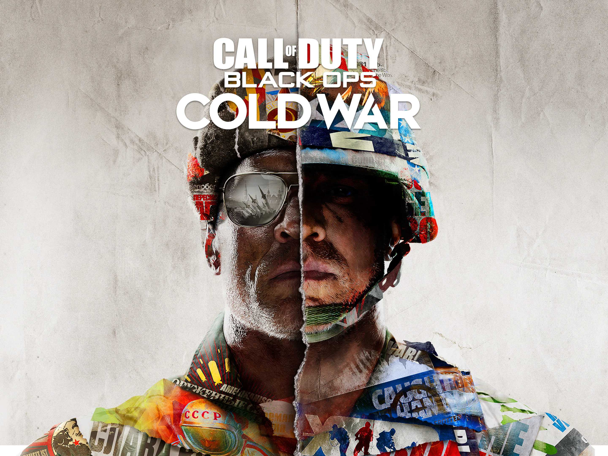

El desarrollo de videojuegos ha visto cómo sus presupuestos siguen creciendo a medida que las editoras invierten más intensamente en producción, soporte de live-service, marketing y planes de contenido a largo plazo. Los videojuegos AAA modernos ahora compiten con las grandes producciones de Hollywood en términos de costos de desarrollo, con algunos proyectos alcanzando presupuestos que antes se consideraban imposibles para la industria. Desde juegos de mundo abierto a gran escala hasta títulos de live-service en curso, estos se encuentran entre los videojuegos más caros jamás creados, basados en los costos reportados de desarrollo y marketing.
Grand Theft Auto VI es, según se informa, el proyecto de videojuego más caro jamás producido, con estimaciones que sitúan su presupuesto total en alrededor de $2 billion. Aunque Rockstar Games no ha confirmado oficialmente la cifra, múltiples informes sugieren que el costo incluye el desarrollo, campañas de marketing global, soporte en línea continuo y años de producción. La escala de GTA 6 parece reflejar la estrategia a largo plazo de Rockstar para la franquicia. Se espera que el juego presente un mundo abierto masivo, sistemas de IA mejorados, visuales avanzados y un componente en línea significativo diseñado para soportar años de contenido tras el lanzamiento.

Monopoly Go! se convirtió en uno de los mayores éxitos de videojuegos móviles en años recientes, y su costo estimado de $1 billion refleja la escala de su infraestructura de live-service y sus esfuerzos de marketing. A diferencia de los videojuegos AAA tradicionales, se cree que gran parte del gasto de Monopoly Go! proviene de campañas de adquisición de usuarios, publicidad móvil, actualizaciones de contenido estacional y sistemas de monetización a largo plazo. El título generó rápidamente miles de millones en gasto de los jugadores, convirtiéndolo en uno de los videojuegos móviles de mayor rendimiento en el mercado.
.jpeg)
Genshin Impact sigue siendo uno de los proyectos de RPG de live-service más grandes en los videojuegos. Los informes estiman que los costos continuos de desarrollo y marketing del juego han alcanzado aproximadamente $900 million desde su lanzamiento. El juego recibe expansiones regulares, nuevos personajes, regiones, actualizaciones de actuación de voz y eventos estacionales. Su calendario de lanzamientos constante y su soporte global de live-service lo han convertido en uno de los juegos más caros de mantener a lo largo del tiempo. Genshin Impact sigue siendo uno de los proyectos de RPG de live-service más grandes en los videojuegos. Los informes estiman que los costos continuos de desarrollo y marketing del juego han alcanzado aproximadamente $900 million desde su lanzamiento.

Call of Duty: Black Ops Cold War alcanzó, según se informa, un presupuesto de alrededor de $700 million cuando se combinaron los costos de desarrollo y marketing. La franquicia Call of Duty se clasifica constantemente entre las producciones más caras de la industria debido a sus calendarios de lanzamiento anuales, soporte multijugador, actualizaciones de live-service y grandes campañas de marketing. Cold War continuó esa tendencia con un extenso contenido post-lanzamiento e integración en el ecosistema más amplio de Call of Duty.

Cyberpunk 2077 costó, según se informa, alrededor de $440 million, incluyendo las correcciones post-lanzamiento y los importantes esfuerzos de expansión del juego. A pesar de su difícil periodo de lanzamiento, CD Projekt Red continuó invirtiendo fuertemente en actualizaciones, parches y la expansión Phantom Liberty. Con el tiempo, el juego recuperó impulso y se convirtió en uno de los lanzamientos comercialmente más exitosos de la editora.

Marvel's Spider-Man 2 tuvo, según se informa, un presupuesto de desarrollo de aproximadamente $315 million. El exclusivo de PlayStation presentó sistemas de desplazamiento expandidos, protagonistas duales, narrativa cinemática y un diseño de mundo abierto a gran escala. Los crecientes valores de producción en los modernos exclusivos first-party han elevado significativamente los costos de desarrollo durante la actual generación de consolas.

El desarrollo de juegos modernos ahora involucra equipos de desarrollo más grandes, ciclos de producción más largos, tecnología gráfica avanzada, captura de movimiento, infraestructura de live-service y campañas de marketing a nivel mundial. Las editoras AAA también continúan dando soporte a los juegos durante años después de su lanzamiento a través de expansiones, actualizaciones estacionales y contenido en línea. A medida que aumentan las expectativas de calidad visual y soporte continuo, es probable que los presupuestos de desarrollo sigan creciendo tanto en los mercados de consolas como en los de videojuegos móviles. Por ahora, GTA 6 parece posicionado para establecer un nuevo punto de referencia para el gasto en producción de videojuegos, reflejando cómo las franquicias a gran escala continúan dominando la industria moderna de los videojuegos.
link de la informacion